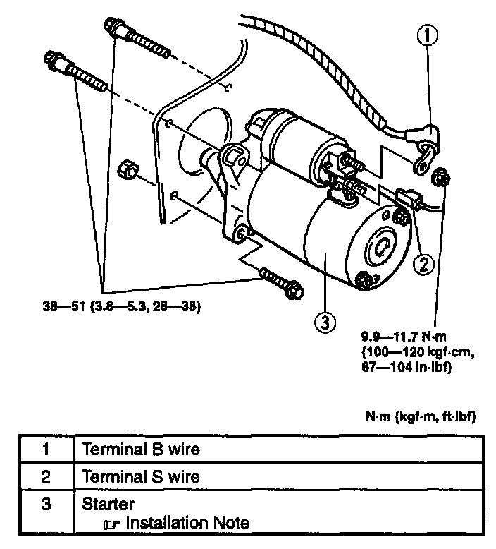
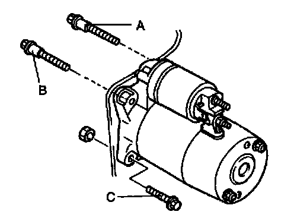

Removal and Installation
WARNING: When the battery cable are connected, touching the vehicle body with starter terminal B will generate sparks. This can cause personal injury, fire, and damage to the electrical components. Always disconnect the battery before performing the following operation.
1. Disconnect the negative battery cable.
2. Remove the intake manifold bracket.
3. Remove the oil tiller tube. (AT)
4. Remove in the order indicated in the table.
5. Install in the reverse order of removal.
Starter Installation Note

1. Temporarily tighten the starter fitting bolt A.
2. Tighten the starter fitting bolt B and C.
Tightening torque
38 - 51 Nm (3.8 - 5.3 kg.m, 28 - 38 ft.lb)
3. Tighten the starter fitting bolt A.
Tightening torque
38 - 51 Nm (3.8 - 5.3 kg.m, 28 - 38 ft.lb)